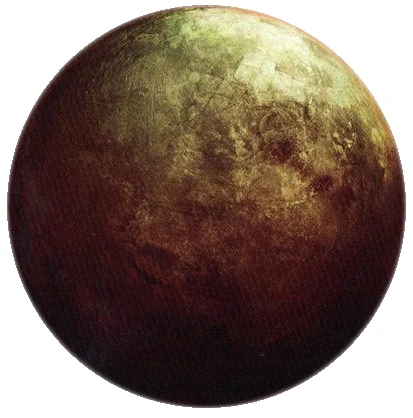

Cthonia
| Cthonia | |
|---|---|
| Former mining and hive world | |
 Cthonia before its destruction, from a pict held by the Logos Historica Verita | |
| System | Cthonia System, a near neighbour of the Sol System |
| Segmentum | Segmentum Solar |
| Classification | Exhausted mining world; Hive world; destroyed |
| Rulers | Mechanicum overseers on the surface; gang-lords below |
| Compliance | Early in the Great Crusade, with the finding of Horus (c. 800.M30, estimated) |
| Notable for | Homeworld of Horus; recruiting world of the Luna Wolves and Sons of Horus; birthplace of Ezekyle Abaddon |
| Status | Besieged 006–014.M31; destroyed by the Dark Angels, 014.M31 |
Cthonia was a mining world of the Segmentum Solar, in one of the star systems nearest to Terra. Mined out before the Age of Strife, it had become a world of crumbling industry, catacombs and violent gangs. It was the world on which the primarch Horus was raised, and the first on which one of the Emperor's lost sons was found, early in the Great Crusade (c. 800.M30, estimated). Its gangs gave the XVI Legion, the Luna Wolves, later the Sons of Horus, most of its recruits, among them Ezekyle Abaddon.[1][2]
During the Horus Heresy the loyalists blockaded and invaded Cthonia from 006.M31, and fought a long war in its tunnels, the Siege of Cthonia. The planet was destroyed by the Dark Angels at the end of the Heresy in 014.M31. The Sons of Horus and the Black Legion have kept many Cthonian customs in the Eye of Terror.[3][4]
History
[edit]Before the Crusade
[edit]Cthonia lay close enough to Terra to be reached by ships without warp drives, and it was colonised, tunnelled and mined from the earliest days of human space travel. By the Dark Age of Technology its natural resources were exhausted, and its old mining technology was later recovered and removed by the Mechanicum of Mars. What remained was a rocky, volcanic world riddled with exhausted mine-workings and abandoned plants. Most of its people lived and fought in the tunnels below the Mechanicum-held surface, in gangs that warred over the little that was left.[1][4]
Horus
[edit]The capsule carrying the infant Horus came down on Cthonia not long after the scattering of the primarchs (late M30; date unrecorded). He was taken in by the gang-lords of the hive and grew up among them, and he was found by the Emperor at a younger age than any of his brothers. The first Imperial contact with Cthonia was made by a pioneer company of the Star Hunters under Captain Kornelius Dure, who called the world a nest of serpents best destroyed. The Emperor found his son there instead, and Horus, the first primarch to be recovered, became the Emperor's companion through the early Crusade.[1][2]
When the Luna Wolves were placed under Horus, the Legion began to recruit from Cthonia's gangs. The Cthonians brought with them a gangland code of loyalty, honour and revenge, and customs such as the topknot and the oath of the blade-cut eye. Over the Crusade the Cthonian intake came to outnumber the Legion's Terran veterans. Famous Cthonians included Ezekyle Abaddon, Falkus Kibre and many of the Justaerin, whose name was taken from a Cthonian gang.[2]
Siege of Cthonia
[edit]
When Horus rebelled in 005.M31, Cthonia was a Traitor recruiting world in the heart of the Segmentum Solar. In 006.M31 Rogal Dorn sent a force of Imperial Fists, Space Wolves and Custodians under Lord Castellan Evander Garrius to take it. The Sons of Horus garrison was driven into the underworld, where it fought a guerrilla war for years. In the course of the siege parts of the population sided with the loyalists, and the Imperial Fists began to recruit from the gangs.[4][3]
After the Battle of Beta-Garmon, a Traitor fleet under Vheren Ashurhaddon, with Word Bearers, Alpha Legion and Dark Mechanicum forces, invaded in 013.M31 to relieve the world. The relief failed, and the loyalists held their ground until the end of the war. Lupercal's Gate, the largest hive, was renamed Traitor's Gate by the besiegers.[4]
Destruction
[edit]In 014.M31, at the end of the Heresy, the Dark Angels under Lion El'Jonson destroyed Cthonia, so that it could never again serve as a source of warriors for the Traitors. The world's surviving gangs and its people died with it. Earlier Imperial records stated only that Cthonia had been abandoned and its population scattered; the newer account of the siege is now accepted.[4][1]
Legacy
[edit]Cthonia remains a word of horror in the Imperium and of pride among the Traitors. The Sons of Horus, and the Black Legion after Abaddon renamed it (date disputed; c. M31–M32), have kept Cthonian words, gang oaths and the honour of the blade-cut eye. Open Imperial records note no later settlement of the system. In the Era Indomitus Abaddon, who calls himself Warmaster of the Imperium Nihilus since the Fall of Cadia (999.M41), remains the most famous Cthonian alive.[5][6]
Geography
[edit]Cthonia was a rocky, volcanic world with a thin, poisoned atmosphere. At its heart lay a great volcanic cavern in which the gangs burned their dead. Notable places included:
- Lupercal's Gate, an immense hive city, more crowded before the Age of Strife than after it; called Traitor's Gate during the siege.[4]
- Terminal Atlas, a space elevator of the Dark Age of Technology linking the surface to an orbital plate.[4]
- The Titan Yards, which despite their name mainly built Leman Russ tanks.[4]
- Tyrant's Den, the underground fortress of the Sons of Horus garrison, and the Aanlok Chasm and Serpent's Jaws, sinkholes leading into the underworld.[4]
Society
[edit]Cthonian society was built around the gangs, of which the Justaerin, the Black Grin, the Reivers and the Iron Teeth are among those recorded. Gang members lived in the old tunnels and paid a blood price to the dark when they entered unknown passages. Cthonians were pale, often freckled and craggy-faced, and were known for loyalty to their crews and cruelty to rivals.[2][4]
Timeline
[edit]| Date | Event |
|---|---|
| Early space age (M1–M2) | Cthonia colonised and mined |
| Dark Age of Technology | Resources exhausted; the world falls to the gangs |
| Late M30 | Horus's capsule lands on Cthonia |
| c. 800.M30 (estimated) | The Emperor finds Horus; Cthonia becomes the Luna Wolves' recruiting world |
| 005.M31 | Horus Heresy begins |
| 006.M31 | Loyalist invasion under Evander Garrius; Siege of Cthonia begins |
| 013.M31 | Ashurhaddon's relief force fails |
| 014.M31 | Cthonia destroyed by the Dark Angels |
See also
[edit]References
[edit]- ^ a b c d Liber Primarchus (M32, revised M41). Administratum Archive, Terra.
- ^ a b c d Oliton, Mersadie (c. 005.M31). Chronicles of the Luna Wolves. Remembrancer Order.
- ^ a b Chronicles of the Heresy (sealed). Logos Historica Verita, Terra.
- ^ a b c d e f g h i j The Siege of Cthonia (c. 015.M31, sealed). Archives of the Imperial Fists.
- ^ The Despoiler (rev. 999.M41). Ordo Malleus (sealed).
- ^ Codex Imperialis (rev. 980.M41). Adeptus Terra.